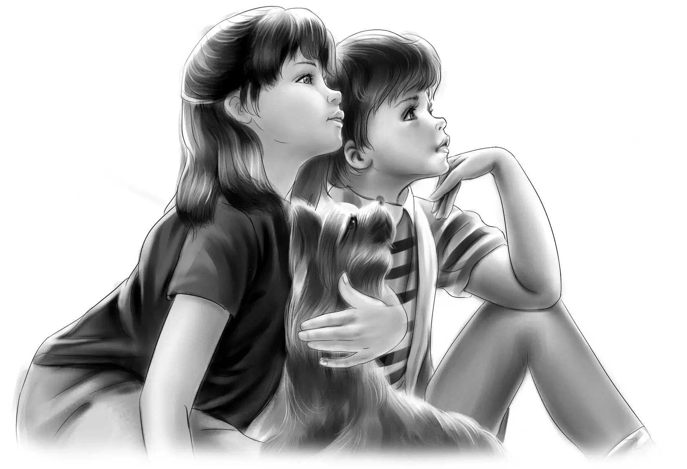
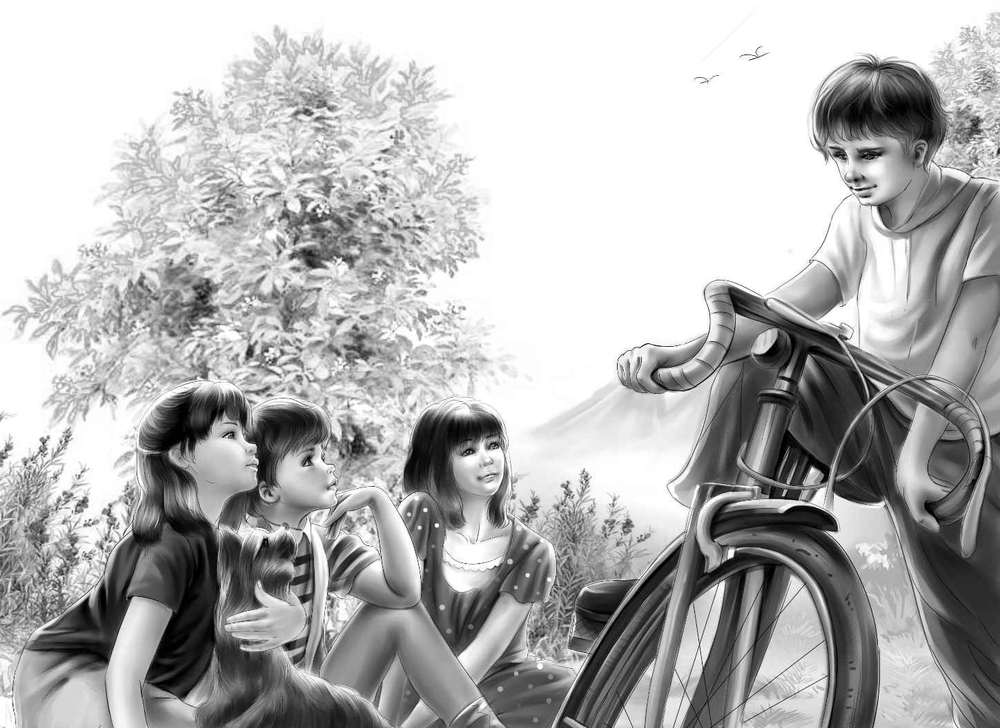

When the Aldens had wheeled away from the post office, Henry said, “Now you can run awhile, Shadow. It will do you good. You are getting lazy.”
The day was warm, and a little wind was blowing. It was a perfect day for riding. Shadow ran along beside Benny’s bike and seemed to enjoy himself.
Benny was a little ahead of the others. Suddenly he stopped his bike and got off. He walked over to a sign nailed to a fence post.
“What do you know?” Benny said. “This might be fun.”
Violet saw Benny stop and called, “What is it, Benny?”
“Look at this,” Benny said as the others rode up.“It says there’s going to be a dog show in Ashby on August 10.”
Jessie said, “It seems to me that I saw a sign like that back in Second Landing.”
“You did?” asked Benny. “Why didn’t you tell me?”
Jessie laughed. “Well, I didn’t know you were interested in dog shows, Benny. Anyway, that was before we had a dog.”
“That’s right,”Benny agreed.“I guess I wouldn’t have noticed this sign if Shadow weren’t around. Anyway, it would be fun to see a dog show. Maybe we’d find out what kind of a dog Shadow is.”
“We can do that anyway,” Henry said. “I’m sure anybody from a kennel could tell us.”
“It could be easier than that,”Violet said. “There’s probably a book in the library that has pictures of dogs like Shadow. It would tell us what kind he is.”
Jessie said, “If they are having a big dog show in Ashby, there must be a lot of people around here who are interested in dogs.”
Benny was thinking.He looked from the poster to Shadow. At last he said, “Oh, Shadow, I wish you could talk. Then we’d know whether you ran away from home or somebody stole you.”
“Come on!” Jessie called. “We aren’t going to get to Ashby and certainly not to Aunt Jane’s if we stop here too long.”
“All right!” Benny answered. “I’ll race you, Jessie, to that big tree.”
“Watch out for cars!” called Violet after them.
“There’s nothing coming,”Benny called back. And he and Shadow and Jessie were off.
Benny rode fast, but Jessie passed him.
Jessie won the race. “But I’m older than you, Ben,” she said. She jumped off her bicycle at the tree and stood there, waiting for the others to come up.
Shadow was tired out when he caught up with Jessie. Nobody had to tell Shadow to sit. He was glad to rest.
When Henry and Violet rode up, they jumped off their bikes and sat down on the grass by the side of the road.
Very soon they saw a car coming in the distance.A woman was sitting beside the driver. As it came nearer, Benny said, “I think it is slowing down.”

Jessie said, “That’s funny. I think they are going to speak to us.”
Jessie was right. The car stopped and the man got out. He was looking at the dog. The Aldens stood up beside their bikes to see what the man wanted.
The man said to Henry, “You have a fine dog there.”
“Yes, we think so,” answered Henry.
“Did you know he was a very rare dog?”
“No.”
“I’d like to buy him,” the man said.
Benny said, “We can’t sell him. He isn’t ours. He just follows us, and we are trying to find his owner.”
“Well, if he doesn’t belong to anybody, let me have him,” the man said. “I’ll pay you well for him. He’s a young show dog.”
Benny shook his head. “No, we couldn’t sell anything we don’t own. Besides, we are going to find out who does own him.”
“Then this really isn’t your dog?” the man said again. The Aldens didn’t like the sound of his voice at all.
“No,” Henry answered. “We are just trying to find his owner.”
The man asked,“How do you plan to do that?”
Benny said,“Everywhere we go, we ask if anyone has lost a dog.”
Henry added, “And when we get home, we’ll put a lost-and-found notice in the newspaper.”
The woman called to her husband, “Come on, the children aren’t going to sell the dog.”
Shadow gave a short bark at the strange man and then began to whine. Benny stooped down and picked up the little dog. Jessie reached over and petted Shadow while Benny held him.
The man said to the Aldens, “Well, don’t let anything happen to that dog.” And after a momentthe strange couple drove off toward Ashby.
The Aldens picked up their bicycles and watched the car until it was out of sight.
“Well, well! What do you make of that?” asked Jessie.
“Not much,” said Henry.
“I don’t like it at all,” said Violet. “Those people tried to make us feel as if we had done something wrong.”
“Well, we know we haven’t,” Benny said cheerfully. “I think they are the ones who want to do something wrong. Let’s forget them!”
“That’s the best idea I have heard for a long while,” said Jessie. “Let’s go! We’ll have to ride right along if we want to get to that good motel.”
The Aldens rode along quietly for about a mile. Then Violet said, “I thought that woman took a picture of Shadow.”
“So did I,” said Jessie.
Benny said, “I heard a little click when the man got into the car.”
“Well, never mind,” said Henry. “A snapshot of Shadow won’t hurt us.”
And not one of the Aldens thought that the woman might have taken a picture of them, too, with their four bicycles.